COLOKÉO SUR TÉLÉPHONE
Les bons écrans,
au bon moment.
De la candidature à la vie dans la coloc, chacun retrouve les démarches qui le concernent.
Captures des interfaces Colokéo sur données fictives. Touche une capture pour l’agrandir.


CANDIDAT
Avant le bail
Le candidat retrouve sa candidature, les pièces à fournir et le calendrier des visites.


LOCATAIRE
Pendant la location
Le locataire retrouve ses documents, ses échéances et les démarches utiles sans passer par le bailleur.

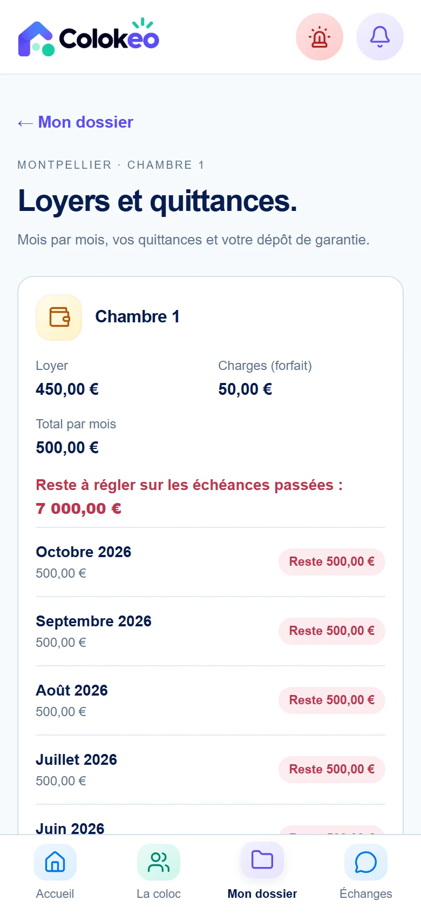

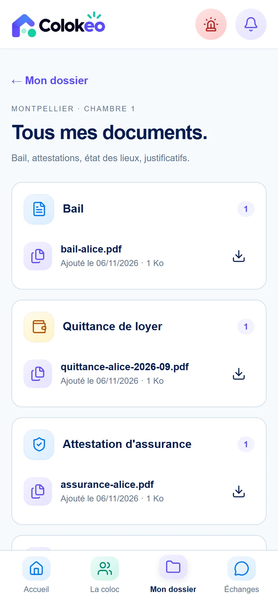

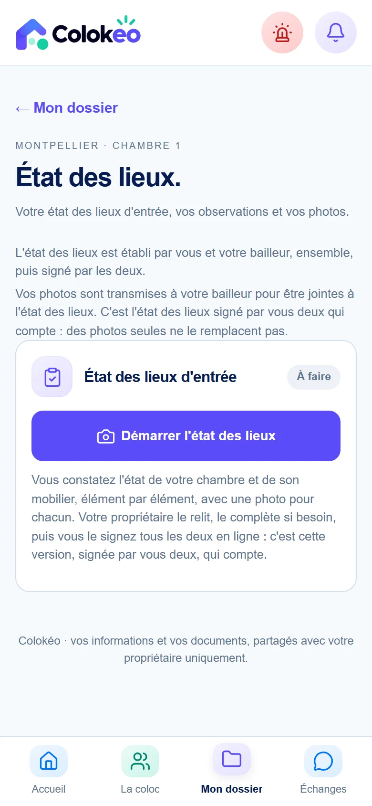

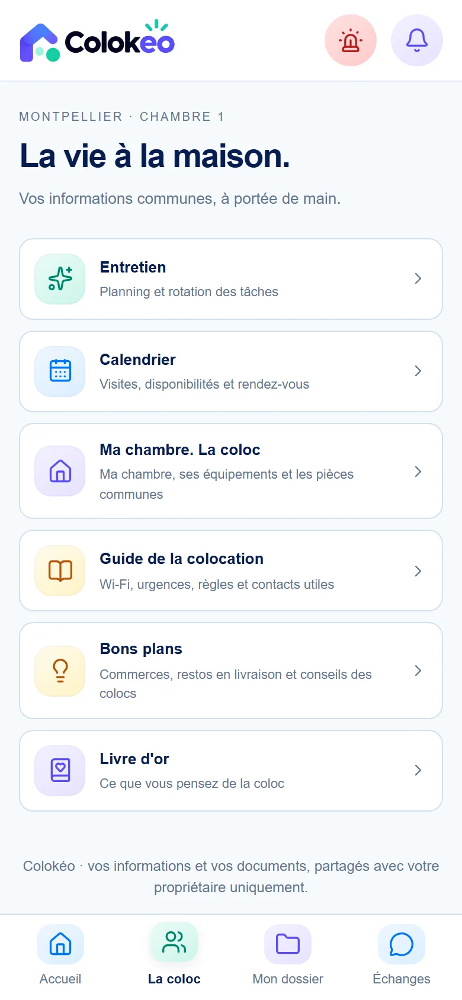

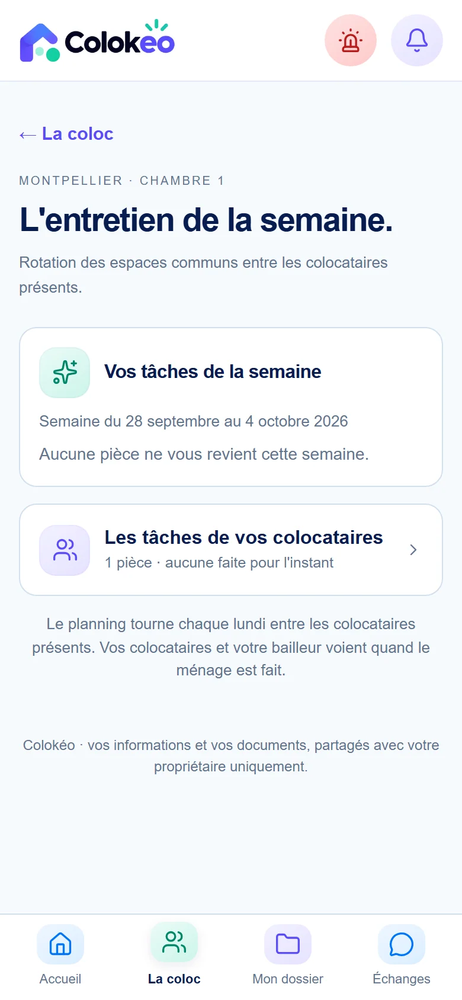

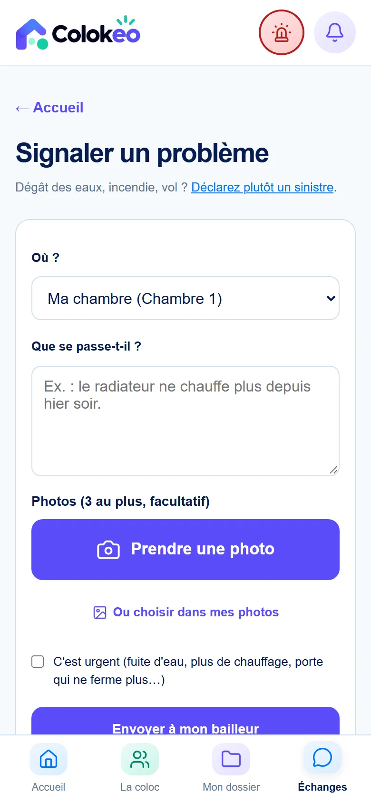

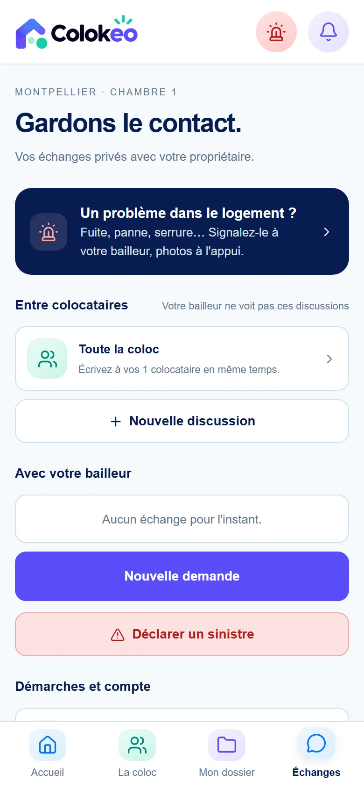
BAILLEUR
Pour le propriétaire
Le bailleur consulte ses loyers, suit les demandes et enregistre une dépense ou des photos sur place.

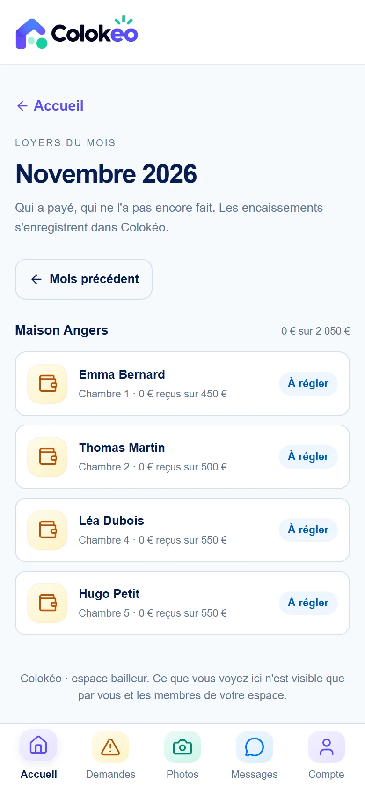

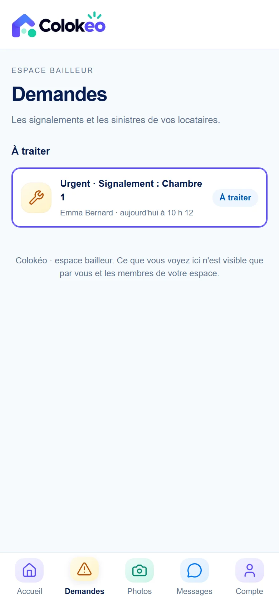

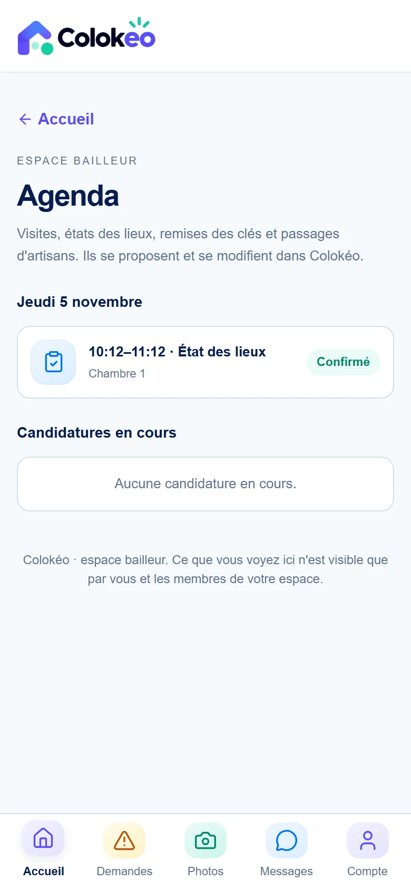

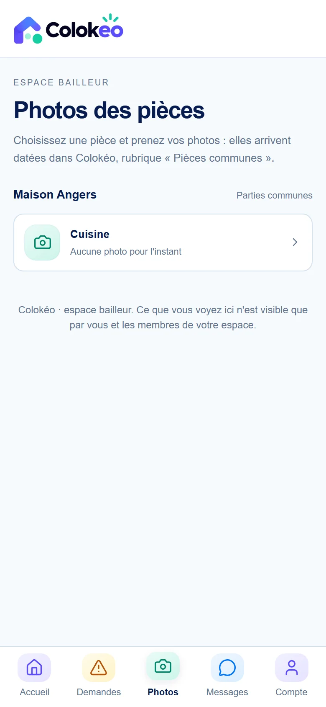

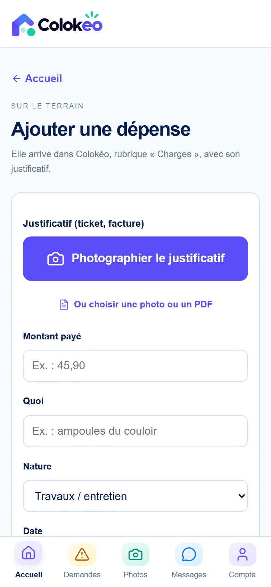